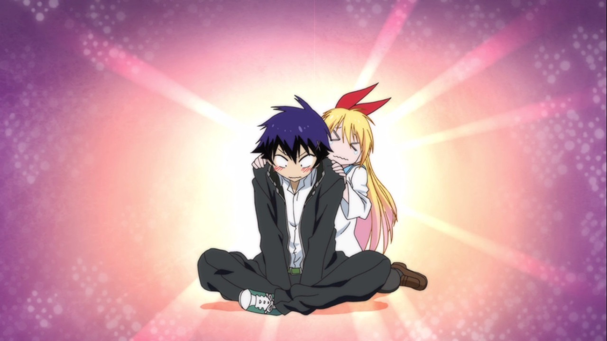
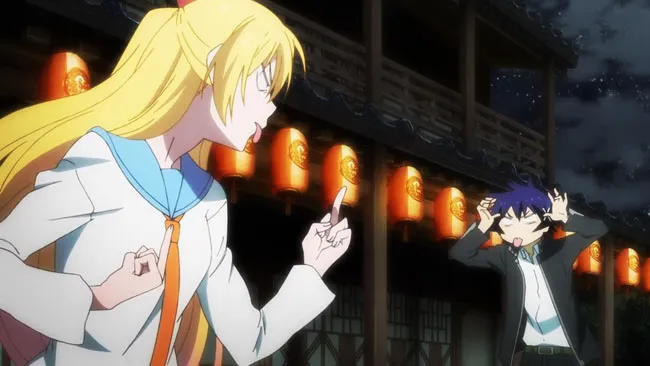
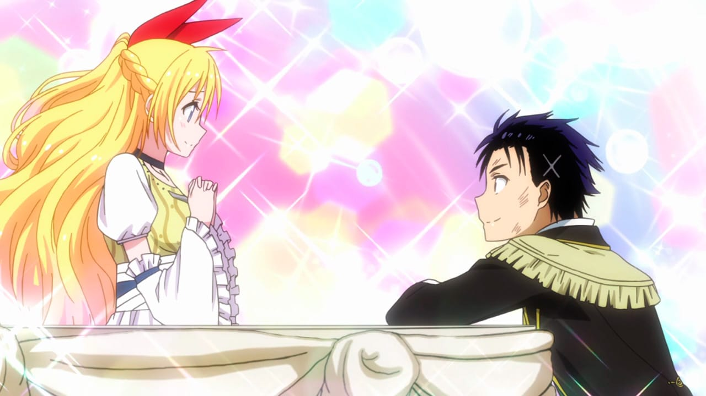
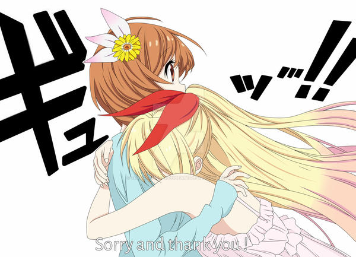
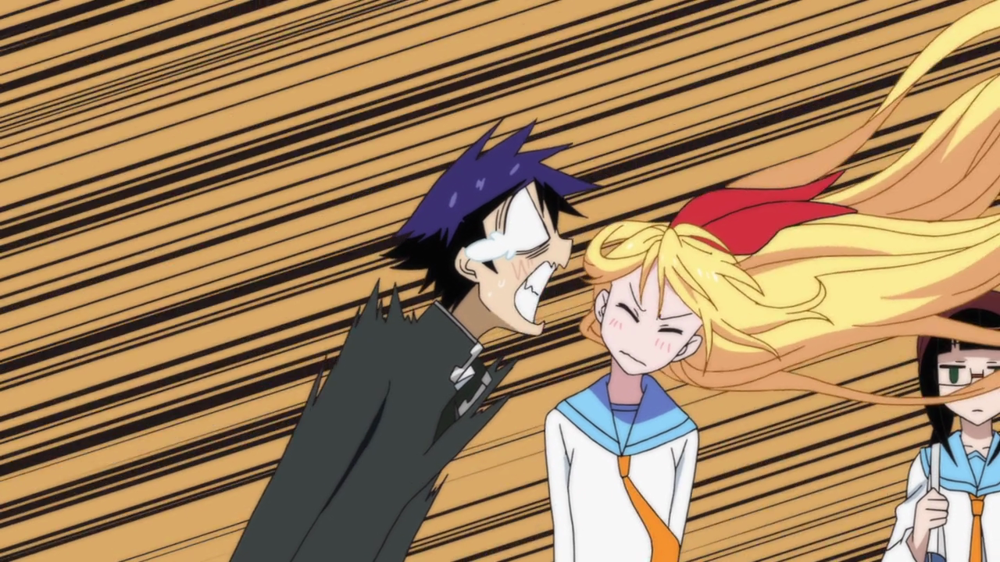
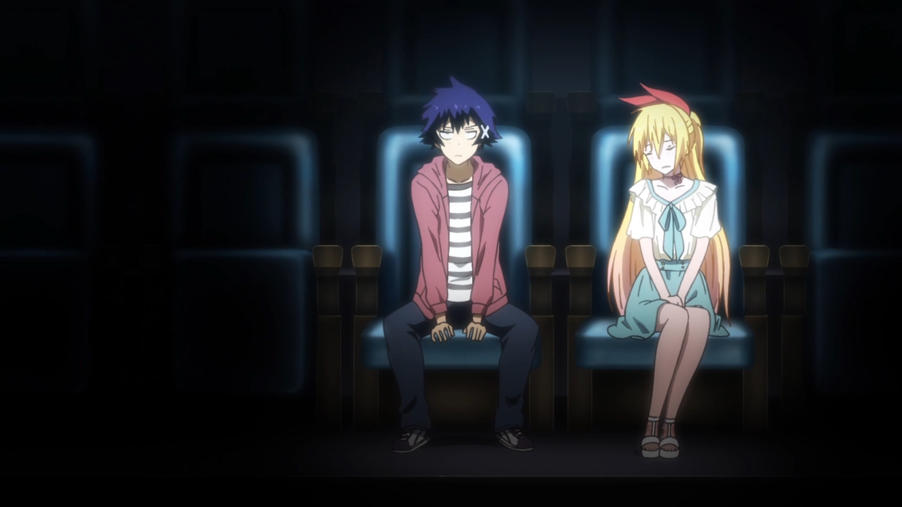
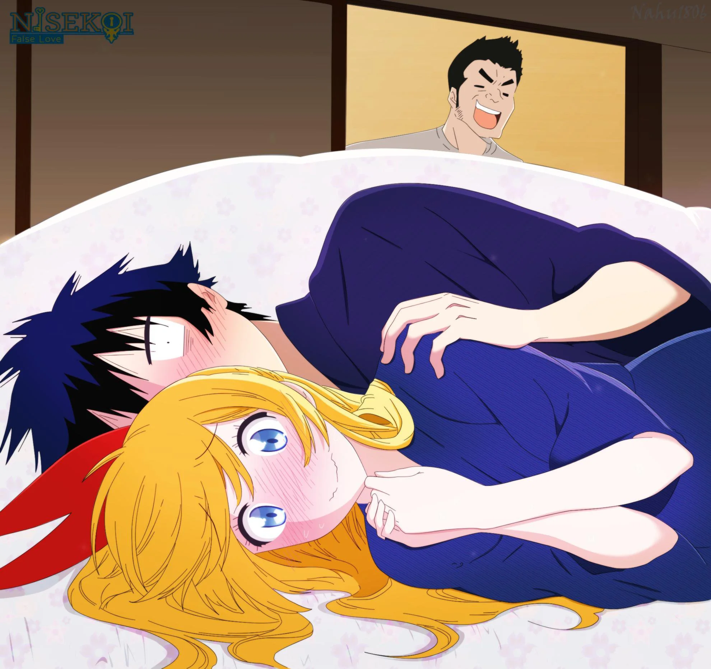
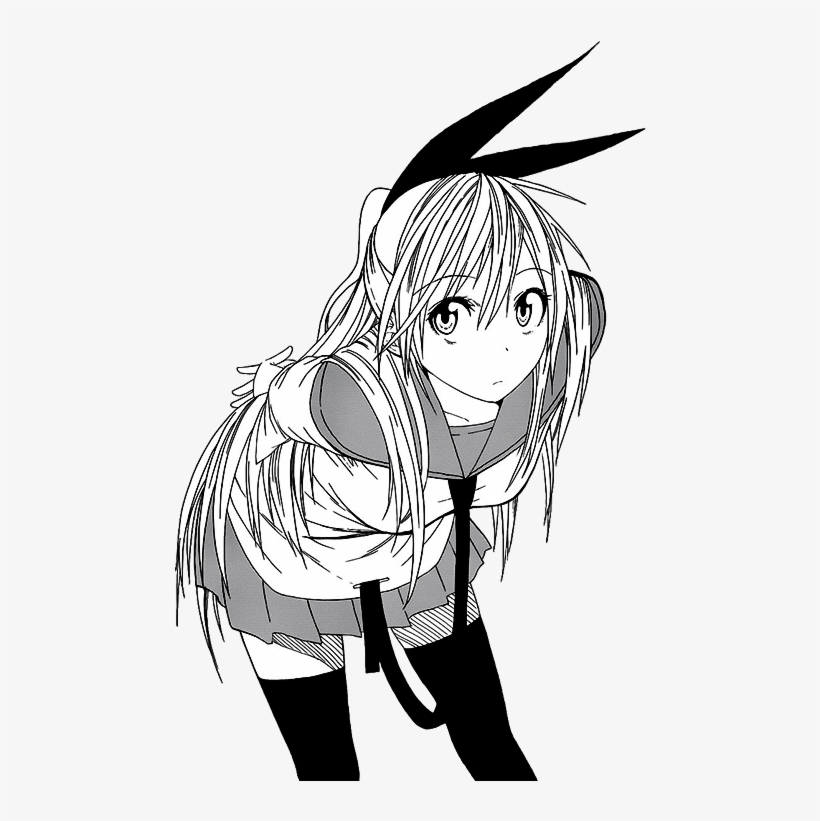

ABOUT ME
I love Raku IchijouThe female lead of Nisekoi. She is the daughter of the lead of the Bee Hive Gangsters and is in a
fake relationship with Ichijo Raku.
Chitoge is very smart and completely fluent in both English and Japanese despite growing up in
America. She is half-Japanese. She is somewhat forgetful, aggressive and quick to attack someone
who gets on her nerves. Once you get to know her though, she becomes very talkative and
friendly.
She is very bad at cooking because she never measures ingredients and adds random things she
thinks will make the dish taste better. She is very athletic as she can easily jump over the
school's walls and swim 25 meters in a couple of seconds.
Ever since she was a child she has had a hard time making friends as others were afraid of her
gangster family and as a result she had a cold demeanor toward people at the start of the series
due to Claude's over protectiveness. This led her to create notebooks filled with information on
classmates in an attempt to make friends.
Chitoge Kirisaki

Chitoge is mostly seen wearing her school uniform which is a half-sleeved white shirt with a blue sailor-style collar attached at the lower part of her neck and it connects a thin orange tie that is laced through a loop at the end of the shirt, making a little part of the tie to reach the skirt. The skirt is of fingertip length made out of blue fabric, that is accompanied by thigh-length black socks and brown slip-on shoes. The same uniform style is applied in winter but instead of wearing half-sleeves, she would wear long sleeves.When swimming or going to the beach, Chitoge has her hair in pigtails or ponytail and she would usually wear one of her bikinis. For a swim meet, Chitoge wore the school's navy blue swimsuit. Outside of school, Chitoge usually wears blouses, skirts, dresses, small heels, and occasionally, pants. During special events like her birthday party, Chitoge will generally wear an elegant dress with jewelry and her hair done.
She's really good at:
Exercises
90%
Math
85%
Cooking
2%
June 7
Birthday
Birthday
160 cm
Height
Height
B
Blood type
Blood type
Raku, ramen
Likes
Likes
Dorayaki
Dislikes
Dislikes
Personal
MOMENT
Here are Chitoge's momentsClick on the images to make them bigger








CONTACT
WHERE I WORK
I'd love your feedback!

Tokyo,Japan
0357671466
locvh12345@gmail.com
Swing by for a cup of coffee , or leave me a note: